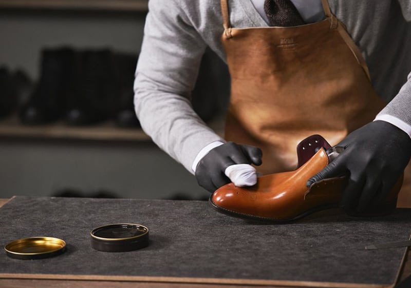
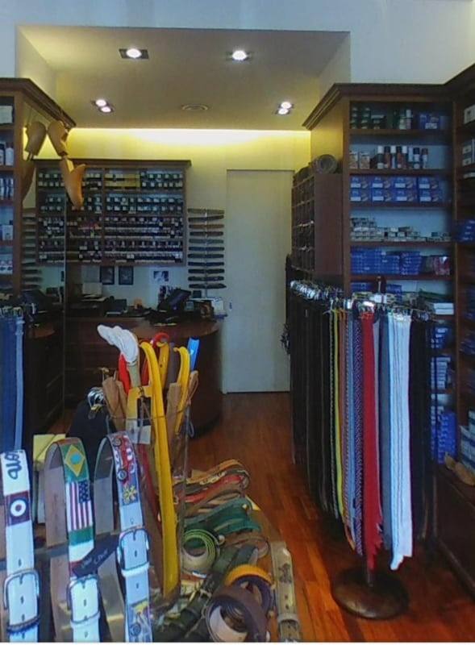
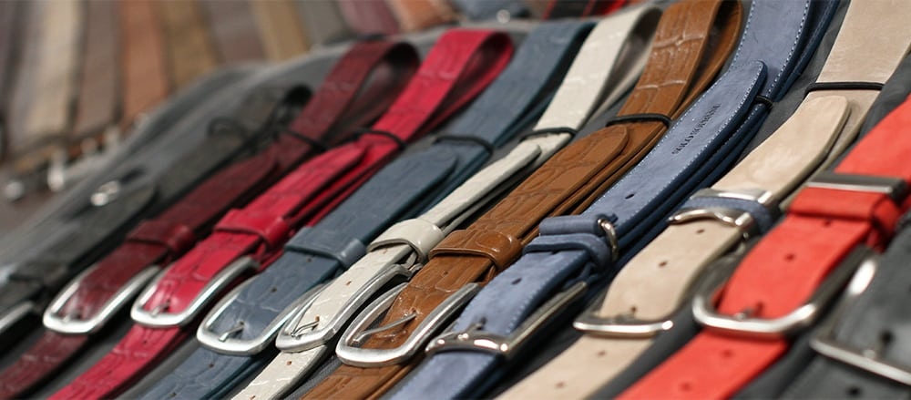
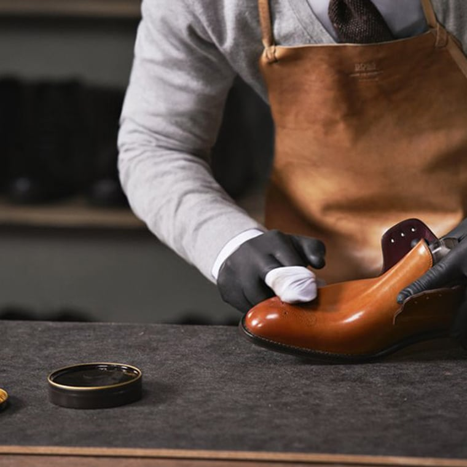
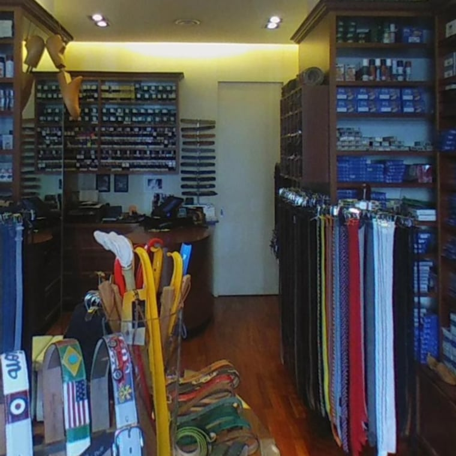
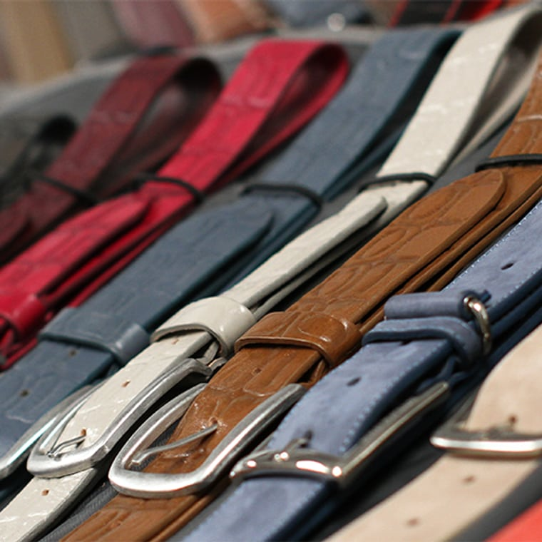
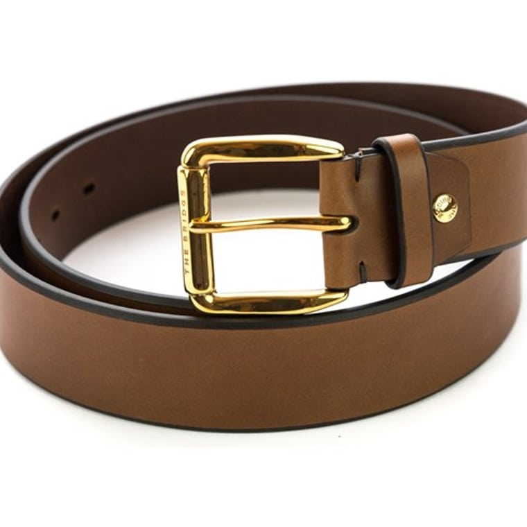
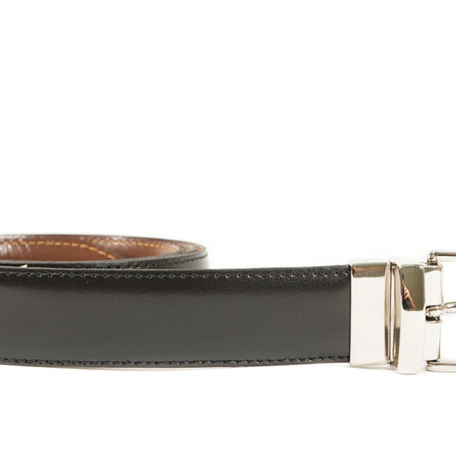

4,7 · 41 recensioni
La cura della scarpa e della pelle, dal 1966
Roby Shop
L'artigiano che fa durare le tue scarpe una vita: cura, riparazioni e centinaia di prodotti. E le cinture in pelle e coccodrillo, tagliate a misura.

La cura
Le scarpe durano una vita
Dalla lucidatura alla riparazione: tacchi, suole, cuciture, zip. E centinaia di prodotti specifici — creme, lucidi, spazzole — uno per ogni esigenza. «Grazie a lui», dicono i clienti, «le mie scarpe durano una vita».
Un vero artista nella cura delle calzature: qui una scarpa non si butta, si rimette a nuovo.
Le cinture & la pelletteria
In pelle e coccodrillo, su misura
Cinture in pelle e coccodrillo, tagliate su misura per te — mai troppo lunghe, mai troppo corte. Un regalo che fa sempre bella figura, e un classico che dura.
E poi la pelletteria: borse, piccoli accessori, riparazioni. Tutto trattato con la stessa cura.

L'artigiano
Roby, figlio d'arte
Dal 1966, seconda generazione: Roby lavora da solo, con la competenza di chi il mestiere l'ha imparato in bottega. Ti consiglia sempre per il meglio, non per vendere — e non è mai esoso.
La bottega
Uno sguardo dentro





Dicono di noi
4,7 ★ su 41 recensioni
«Un artigiano storico di grande competenza e professionalità. Un vero artista nella cura delle scarpe, con centinaia di prodotti specifici per ogni esigenza. Lavora da solo, figlio d'arte.»
Giorgio C. · Google
«Roby è professionale e sempre cordiale. Un'ampia scelta di cinture, perfette come regalo, e ha sempre salvato le mie scarpe quando andavano riparate: grazie a lui durano una vita.»
Michael G. · Local Guide
«Il proprietario Roby è molto competente e consiglia sempre per il meglio, non necessariamente per vendere. Accessori per calzature TOP, riparazioni TOP. Molto pulito e non esoso.»
Daniela G. · Google
«Bellissime cinture in pelle e coccodrillo, tagliate perfettamente a misura.»
Michael H. · Google
Dove & orari
In Via Cherubini, Corso Vercelli
Via Francesco Cherubini 4, 20145 Milano · zona Corso Vercelli, a due passi da Piazza Piemonte
…
| Lunedì | 15:00 – 19:30 |
| Martedì | 09–13 · 15–19:30 |
| Mercoledì | 09–13 · 15–19:30 |
| Giovedì | 09–13 · 15–19:30 |
| Venerdì | 09–13 · 15–19:30 |
| Sabato | 09–13 · 15–19:30 |
| Domenica | 10:30 – 19:00 |
Domande frequenti
Fate riparazioni di scarpe?
Sì: tacchi, suole, cuciture, zip. E la cura completa con centinaia di prodotti specifici — lucidi, creme, spazzole — per far durare le tue scarpe una vita.
Vendete cinture su misura?
Sì: cinture in pelle e in coccodrillo, tagliate a misura per te. Perfette anche come regalo. E ripariamo borse e pelletteria.
Da quando esistete?
Dal 1966. Roby è un artigiano figlio d'arte, seconda generazione: consiglia sempre per il meglio, non per vendere.
Che orari fate?
Lunedì 15:00–19:30; da martedì a sabato 09:00–13:00 e 15:00–19:30; domenica 10:30–19:00.
Dove siete?
In Via Francesco Cherubini 4 a Milano, zona Corso Vercelli. Chiama 02 498 0348.